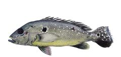
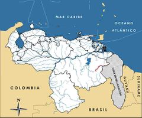

Cichla ocellaris
| Pavón del Cuyuní | |
|---|---|
|  | |
| Riesgo de extinción | |
 En peligro (UICN) | |
| Clasificación científica | |
| Reino: | Animalia |
| Filo: | Chordata |
| Clase: | Actinopterygii |
| Orden: | Perciformes |
| Familia: | Cichlidae |
| Género: | Cichla |
| Especie: | Cichla ocellaris |
| Nombre binomial | |
|
Cichla ocellaris Bloch et Schneider, 1801 | |
| Distribución | |
|
 Mapa de distribución de Cichla ocellaris | |
Contenido
Información de Evaluación
- Categoría y Criterio Regional: En Peligro B1ab(iii)
- Fecha de Evaluación Regional: 2015
- Evaluadores: Jesús Morales-Campos y Ariany García-Rawlins
- Categoría y Criterio Global: No Evaluada (NE)
Justificación
Evaluaciones Previas
1999: Vulnerable (VU)
2008: Vulnerable (VU)
Información General
Nombres comunes
Pavón del Cuyuní, Cuyuni peacock bass, Cuyuni peacock cichlid.
Notas taxonómicas
Sinónimos
Descripción
Pez cíclido de tamaño relativamente grande que puede superar los 50 cm de longitud total y pesar más de 3 kg. Su cuerpo es moderadamente profundo y con escamas grandes (70-79 en línea lateral), en comparación con las otras especies del género Cichla. Su coloración corporal es variable y depende de la ontogenia (crecimiento del pez) y su estado reproductivo. En adultos vivos el color de fondo varía entre verde grisáceo y de amarillo a verde oliva, con el dorso más oscuro que los lados y el vientre más claro. En los costados pueden localizarse tres barras verticales no muy marcadas y situadas sobre la línea lateral, las dos primeras con una tenue extensión que se prolonga hacia el vientre, y la tercera franja con un ocelo. También llega a ostentar manchas negras u ocelos de forma no definida en ambos lados del cuerpo, con énfasis hacia el vientre (Kullander y Nijssen 1989). Al igual que otros miembros del género Cichla, es considerada una especie muy importante por sus funciones como depredadora y reguladora de las comunidades en los ecosistemas acuáticos, por lo que cualquier impacto directo sobre ella afecta a toda la comunidad (Lasso y Machado-Allison 2000).
Distribución
Geográficamente, este pavón se encuentra distribuido en las cuencas de los ríos que drenan las Guayanas (Guayana Francesa, Surinam, Guyana), cursos de agua del Esequibo incluyendo el río Cuyuní en Venezuela, y la cuenca del río Branco en Brazil (Kullander y Nijssen 1989, Kullander y Ferreira 2006). En Guyana los estudios realizados llegan hasta la parte este del río Marowijne, aún queda el lado oeste por investigar (Lowe-McConnell 1969). En Venezuela la especie está restringida a la cuenca del Cuyuní al este del estado Bolívar (Lasso y Machado-Allison 2000). Frecuentemente ha sido confundida con Cichla orinocensis (pavón común o pavón tres estrellas), al punto de que todas las referencias en la literatura, previas al año 2000, donde se atribuyen datos bioecológicos, biogeográficos o taxonómicos a Cichla ocellaris, son erróneos y corresponden en realidad a C. orinocensis (Lasso y Machado-Allison 2000, Winemiller 2001).
- Sistema: Dulceacuícola
- Bioregión:
- Intervalo altitudinal (m):
- Endémica: No
Situación
No se conocen estimados poblacionales y su área de distribución en Venezuela está muy afectada por actividades mineras, además de restringida a una extensión de 4491,93 km2. Afortunadamente en ríos de las Guayanas y cuenca del río Branco todavía hay poblaciones en condiciones muy favorables. Sin embargo, dada la intensidad de las transformaciones de su hábitat en nuestro país, su sobrevivencia en Guyana y Surinam no representa una reducción del riesgo a escala nacional (UICN 2012b).
- EOO (km2): 4491,93
- AOO (km2): Temporalmente sin información
- Tendencia Poblacional: Desconocida
Amenazas
La cuenca del río Cuyuní ha sufrido una fuerte explotación minera y una extensa destrucción de sus bosques. Se estima que más de 4 millones de hectáreas han sido afectadas, lo cual se atribuye al otorgamiento de 400 concesiones mineras en la zona, además de otras operadoras aún desconocidas (Rondón, G. 1996). Esta gran deforestación conlleva el arrastre de sedimentos de los diferentes tributarios hasta el cauce principal del cauce del Cuyuní, lugar donde con preferencia habita la especie. Dado que Cichla ocellaris es un depredador visual, es probable que el aumento de la turbidez del agua afecte su comportamiento y supervivencia. Otra de las amenazas importantes en los tributarios de su cauce típico es la contaminación mercurial (Rondón, G. 1996, Sartorio 1996), por el uso de este metal líquido en los procesos de extracción del oro lo cual ha provocado severos impactos irreversibles, y sobre todo, porque al ser el pavón un depredador tope de la red trófica, bioacumula más mercurio que otras especies. También es un pez aprovechado para la pesca de subsistencia, siendo muy apreciado como recurso alimenticio por los lugareños (Sartorio 1996).
Conservación
En nuestro país, la pesca comercial del género Cichla está prohibida (Venezuela 1972). No obstante, su captura y comercialización ilegal es habitual. La talla mínima de captura es de 30 cm de longitud total. Se propone realizar investigaciones científicas sobre el estado actual de sus poblaciones (ecología, tallas, uso por las poblaciones locales, etc.). Es prioritaria la conservación de la cuenca alta del río Cuyuní, así como la reconsideración de las actuales concesiones mineras otorgadas en el área.
Autorías
Autores originales
Carmen Montaña
Colaboradores
Ilustrador
Ximenamaria Rausseo
Referencias
- Kullander, S. O. y Nijssen, H. (1989). The Cichlids of Surinam: Teleostei, Labroidei. E. J. Brill. Leiden, Países Bajos. 256 pp.
- Lasso, C. A. y Machado-Allison, A. (2000). Sinopsis de las especies de peces de la familia Cichlidae presentes en la cuenca del río Orinoco. Serie Peces de Venezuela. Universidad Central de Venezuela, Facultad de Ciencas, Instituto de Biología Tropical, Museo de Biología. Caracas. 150 pp.
- Lowe-McConnell, R. (1969). The cichlid fishes of Guyana, South America, with notes on their ecology and breeding behavior. Zoological Journal of the Linnean Society 48: 255-302.
- Montaña, C. (2015). Pavón del Cuyuní, Cichla ocellaris. En: J.P. Rodríguez, A. García-Rawlins y F. Rojas-Suárez (eds.) Libro Rojo de la Fauna Venezolana. Cuarta edición. Provita y Fundación Empresas Polar, Caracas, Venezuela. Recuperado de: animalesamenazados.provita.org.ve/content/pavon-del-cuyuni Vie, 15/12/2017 - 08:29
- Rodríguez, J. P. y Rojas-Suárez, F. (1999). Libro Rojo de la Fauna Venezolana, segunda edición. PROVITA, Fundación Polar. Caracas. 444 pp.
- Rodríguez, J. P. y Rojas-Suárez, F. (Eds.) (2008). Libro Rojo de la Fauna Venezolana, tercera edición. Provita y Shell Venezuela, S. A. Caracas, Venezuela. 364 pp.
- Rondón, G. (1996). Mining and the environment in VenezuelaLondon. 13 pp.
- Sartorio, A. (1996). Explotación de oro y diamante en el Estado Bolívar. CENDES, Universidad Central de Venezuela. Caracas. 25 pp.
- UICN (2012b). Directrices para el uso de los Criterios de la Lista Roja de la UICN a nivel regional y nacional: Versión 4.0. Unión Internacional para la Conservación de la Naturaleza (UICN). Gland, Suiza y Cambridge, Reino Unido. iii + 43 pp.
- Venezuela. (1972). Gaceta Oficial de la República de Venezuela N° 29.808 del 19 de mayo de 1972. Resolución N° DG-124 del M.A.C. del 17 de mayo de 1972. Caracas.
- Winemiller, K. O. (2001). Ecology of peacock cichlids (Cichla spp.) in Venezuela. Journal of Aquariculture and Aquatic Sciences 9: 93-112.